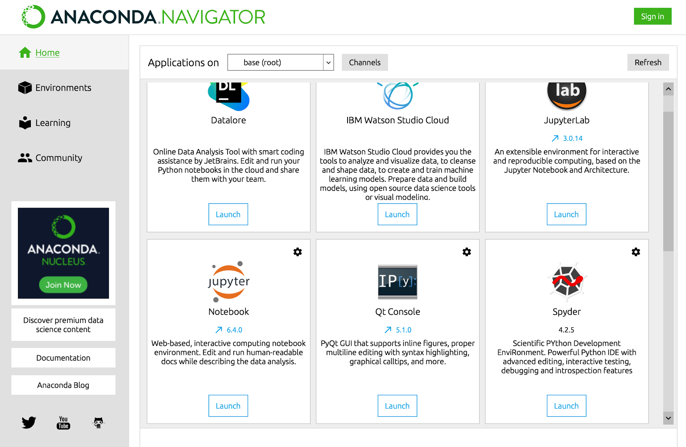
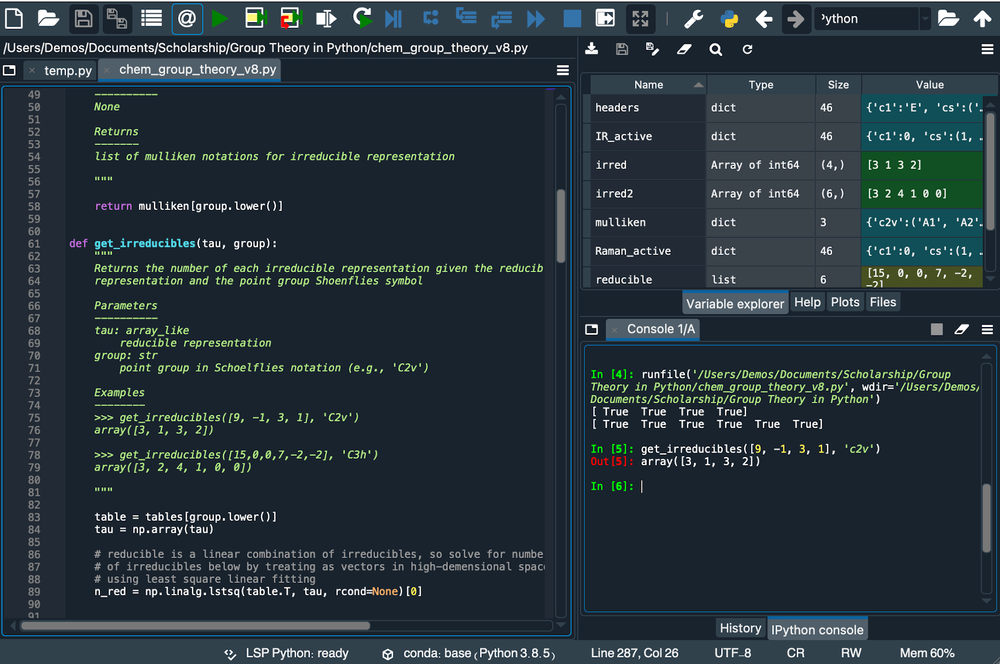

Chapter 13: Command Line & Spyder#
Notice
This chapter will be relocated to the end of the book sometime in August 2025.
Up to this point, we have been running all of our Python scripts through the IPython environment from either a Jupyter notebook or a Python interpreter. A third way to run Python code is to save it as text files and run the code from the computer’s or Jupyter’s terminal. The advantage of this approach is that it is more practical for larger scripts and more convenient for doing repetitive tasks like reformatting instrument data. You will need access to the terminal to run your Python script which is discussed below.
13.2 Running Scripts#
Now that you know the basics of the terminal command line, we can now run our first script. Open a text editor of your choice. Be careful if you write Python code in a regular word processor (e.g., Word, LibreOffice, Pages, etc…) as it may save extra formatting in any text file generated. A better option is to either use Spyder introduced in section 13.5 or (easiest) select Python File from the JupyterLab launcher. Write some Python code in a new file and save it as a text file titled first_script.py. The .py extension does not do anything to the file; it just indicates to other software that this text file is a Python script. For this demonstration, I’ll include the following code in my text file.
import random
rng = np.random.default_rng()
rdn = rng.integers(0,100)
print(rdn)
Next, open the terminal and navigate to the directory (i.e., folder) containing the above script file and type the following into the terminal.
$ python first_script.py
66
You just ran your first script from the command line! The output only includes what you print in the Python script. One key difference between a script run in the command line and Python code run in a Jupyter notebook is that when running from the command line, if you want something displayed, you need to explicitly instruct this action using the print() function. In contrast, the Jupyter notebook automatically prints the output of calculations that are not assigned to variables.
An alternative way to run the above file without having to navigate to the folder is to provide the file with the full (absolute) path like is shown below.
$ python /Users/Me/Desktop/first_script.py
98
This might seem like a lot of typing. One handy shortcut is to type python followed by a space and then drag-and-drop the file into the terminal window. This will result in the file path and name being automatically pasted into the terminal window.
$ python /Users/Me/Desktop/first_script.py
65
13.3 Additional Inputs#
There are often times when running a script from the command line that you want to be able to include addition inputs or information to the Python script. This may come in the form of a user input or extra files. Below are ways to accomplish this making your script more interactive.
13.3.1 User Inputs#
In the event you want the user to be able to input values, Python includes an input() function that prompts the user to provide information. For example, if we want to write a script to calculate molecular weights of simple hydrocarbon molecules based on the number of hydrogen and carbon atoms, it would be helpful to allow the user to input the number of hydrogen and carbon atoms instead of altering the script itself. The argument inside the input() function is what is displayed in front of the user to prompt an input. It is important to note that the input() function provides the user input as a string. Being that we are expecting integers, we need to convert these strings to integers before calculating the molecular weight of the molecule as has been done below.
H = input('H = ')
C = input('C = ')
MW = int(H) * 1.01 + int(C) * 12.01
print(MW)
Save the above script in a text file named MW.py and run it. You are prompted to provide the number of hydrogens and carbons before a molecular weight is calculated and printed.
$ python MW.py
H = 4
C = 1
16.05
13.3.2 sys.argv#
Another approach to allowing the user to provide additional information is to provide all the required information in the same line as calling the script. For example, when running the above hydrocarbon molecular weight script above, you might expect it to look like the following.
$ python MW.py 4 1
16.05
We can instruct Python to grab the information behind the script file name using the argv() function from the sys module. This function brings all information after python as a list which can be accessed using indexing. The above input generates the following list from sys.argv.
['MW.py', '4', '1']
Now it is just a matter of indexing and converting strings to integers as is done below.
import sys
H = sys.argv[1]
C = sys.argv[2]
MW = int(H) * 1.01 + int(C) * 12.01
print(MW)
Now we can run the script as follows.
$ python MW.py 8 3
44.11
The above method is ideal from accepting file names and extension as they can be dragged into the terminal more easily than typed. The down side to this approach is that the user needs to be aware of what information to provide the script and in what order. This is analogous to the difference between a keyword argument and positional argument in a function.
13.4 Running .py Files in Jupyter#
As a way to combine Python scripts in external .py files and Jupyter notebooks, it is possible to run these Python scripts from the Jupyter notebook using the %run magic command. As an example, let’s say we have the following code in a file called \(dist.py\).
pt1 = (1,5,9)
pt2 = (9, 0, 3)
def distance(coord1, coord2):
x1, y1, z1 = coord1
x2, y2, z2 = coord2
return ((x1 - x2)**2 + (y1 - y2)**2 + (z1 - z2)**2)**0.5
We can run this code from a Jupyter notebook using the following command. Like we’ve seen previously, Jupyter assumes the referenced file is in the same directory as the Jupyter notebook unless otherwise indicated.
%run dist.py
pt1
(1, 5, 9)
distance(pt1, pt2)
11.180339887498949
Now that the \(dist.py\) file has been executed, the variables and function are available in the Jupyter notebook as if this code had been run in a Jupyter code cell.
13.5 Spyder#
While using a text editor to write your scripts works just fine, you may long for some of the features of Jupyter notebooks like how it automatically color codes text based on syntax and provides easy access to function docstrings. To get some of these features back, you can use an Integrated Development Environment (IDE). There are many to choose from, but here we will address Spyder (Scientific Python Development Environment) as it is specifically tailored to scientific applications and comes with the Anaconda installation of Python.
There are two methods of launching Spyder. The first is to type spyder in the terminal.
$ spyder
The second method is to press the launch button for Spyder in Anaconda Navigator (Figure 1). The latter method is often slower because it requires that Navigator be first launched.

Figure 1 A screenshot of the Anaconda Navigator application launcher window.
Once Spyder has launched, you will be greeted by an interface divided into three windows (Figure 2). The left window is a text editor where code is written. Like the Jupyter notebook, it color codes your Python code based on syntax and provides docstrings and helpful notices. To run the code written here, you can either save it as a text file and run it as described above, or you can press the run button (►) at the top of the window. The latter approach is particularly handy during the development phase of a script as it allows you to quickly test and modify your script without having to jump between Spyder and the terminal. The smaller window on the bottom right is a Python terminal where you can test out code and see the output of your code if you run your code inside Spyder. The top right window is useful as a file navigator and as a variable explorer depending upon the tabs you choose. In Figure 2, it is a variable explorer which shows each variable in memory and what it contains. This is powerful tool when debugging code as it allows you to quickly see what the code is doing and where things are not working.

Figure 2 The Spyder interface with the text editor (left), variable explorer (top right), and interpreter (bottom right).
So when should you use a Jupyter notebook and when should you use Spyder? The decision is often a matter of preference, but if you are doing interactive data analysis, Jupyter notebooks are typically the better choice. This is particularly true if you need to share your analysis and results with others. If you are writing large blocks of code, Spyder is likely a better choice of environment. As an example, if you wish to perform complex mining of information from an external data set and then analyze the resulting information, you might want to write the data mining code in Spyder and then run the data analysis in a Jupyter notebook.
Further Reading#
Spyder Website. https://www.spyder-ide.org/ (free resource)
Exercises#
Complete the following problems by writing a Python scripts either in a text editor or Spyder and run them from the terminal. JupyterLab, newest version of Jupyter, includes a text editor if you wish to use it, but do not use a Jupyter notebook for any of these problems! Any data file(s) refered to in the problems can be found in the data folder in the same directory as this chapter’s Jupyter notebook. Alternatively, you can download a zip file of the data for this chapter from here by selecting the appropriate chapter file and then clicking the Download button.
When an electron in a hydrogen atom relaxes from a higher to a lower energy orbital, a photon is released with the wavelength in nm described by the below equation. Write and run a Python script that prompts the user to input the initial and final principle quantum numbers (n) and prints the wavelength (λ) of light emitted with units.
\[ \frac{1}{\lambda_{nm}} = 1.097 \times 10^7 nm^{-1} \left( \frac{1}{n_i^2} - \frac{1}{n_f^2} \right) \]In the folder titled data you will find synthetic data for the conversion of A \(\rightarrow\) P. Both data sets are for first-order reactions.
a) Write a Python script that accepts the name of a single data file like below and outputs the rate constant (k) for the data. Test it on both data sets. For the script to find the file, it needs to either be in the same directory as the data file or be provided the absolute path to the file.
$ python script.py kinetic_data_1.csv or $ python script.py /Users/Me/Desktop/kinetic_data_1.csv
b) Modify the above script to print out the rate constant for all data sets in the folder. This script will accept the folder name instead of the file name. Remember to use the
osmodule described in section 2.4.1.